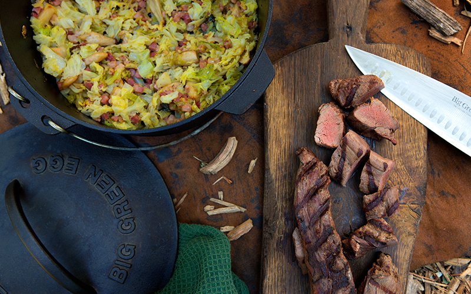
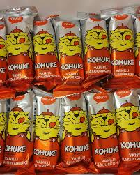
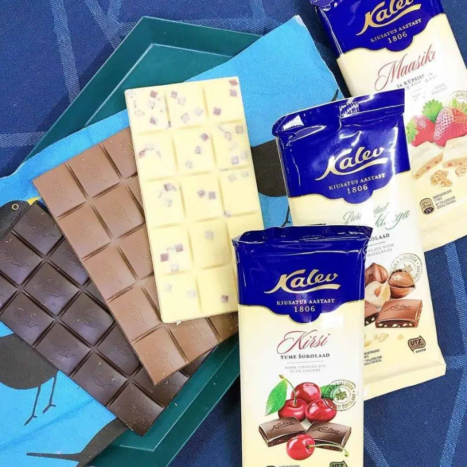
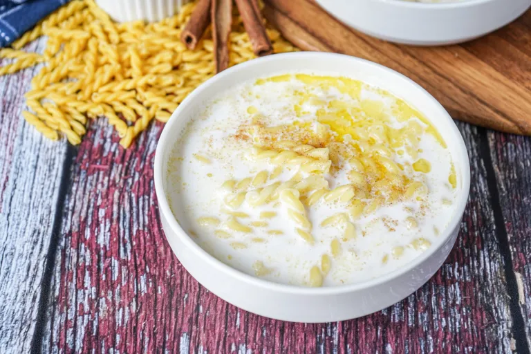

Wild Boar

Wild Boar is a very popular dish in Estonia.
- Meltingly tender wild boar.
- stewed in rich tomato
- red wine sauce
- Served with fresh, homemade tagliatelle.
Kohuke

Kohuke is a realy popular desert in estonia that is
found in supermarkets around Estonia
- curd 66%
- glaze 18% [sugar, fully hydrogenated vegetable fat (palm kernnl oil)
- fat reduced cocoa powder
- cocoa mass
- whey powder
- emulsifier (lecithin)
- sugar, vanillin.
Kalev

This is a very popular chocolate
- Sugar
- cashew nut
- vegetable fat (palm kernel, palm oil)
- whole milk powder
- cocoa mass
- cocoa butter
- whey powder (milk)
- pistachio paste 1%
- emulsifier (lecithin)
- flavouring
- vanillin
- salt
- colour
Piimasupp

- 500 ml water (2 cups)
- 1 teaspoon salt
- 100 g short pasta (1 cup)
- 750 ml whole milk (3 cups)
- 1 generous pinch sugar
- 1 tablespoon butter